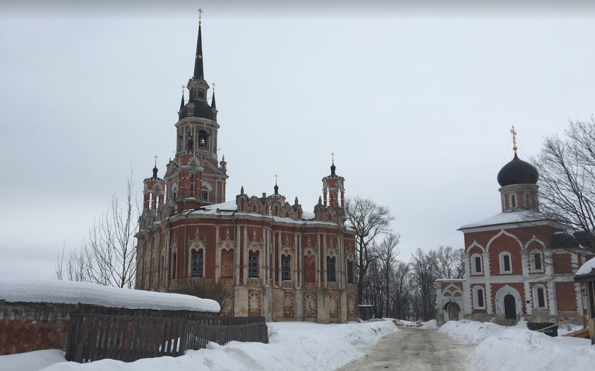
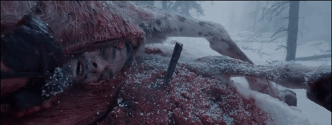
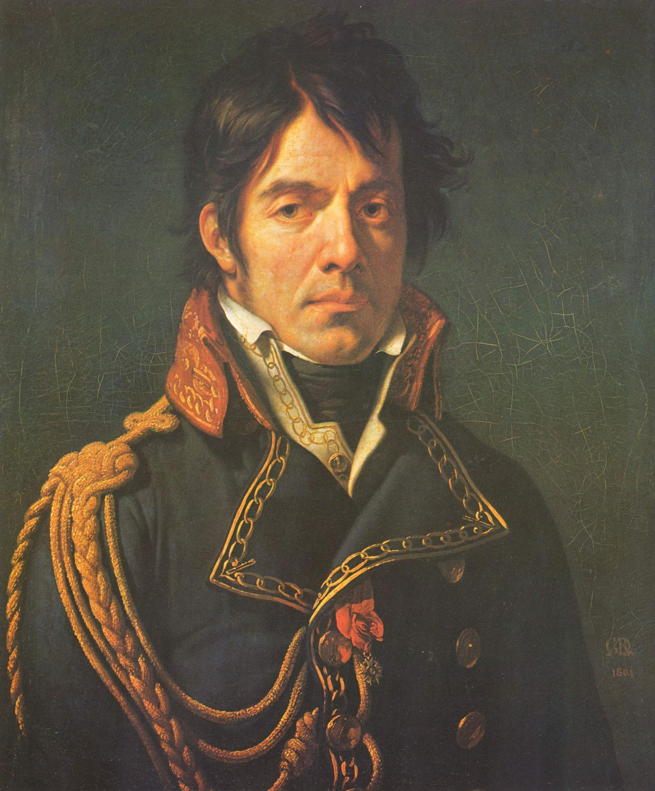

새벽 2시의 대화 - 나폴레옹과 콜랭쿠르
게시: 2021-06-07T06:30:35+09:00
말로야로슬라베츠를 떠난 나폴레옹은 이틀이 지난 10월 28일에야 모즈하이스크에 도착하여 모르티에 및 쥐노와 합류했습니다. 여기서 나폴레옹은 모스크바에서 체포되어 압송되어 온 러시아 유격부대 지휘관 빈칭게로더를 만났는데, 이 사람은 원래 뷔르템베르크(Wurttemberg) 태생이었고 뷔르템베르크는 사실상 나폴레옹의 통치 하에 있는 라인 연방국이었습니다. 그렇지만 어디까지나 러시아 정규군 장군이었던 빈칭게로더에 대해 나폴레옹은 단지 뷔르템베르크 출신이라는 이유 하나만으로 자신을 배신한 부하 취급을 하며 '당장 총살시켜버리겠다' '스파이로 군법회의에 회부하겠다'라며 엄청나게 화를 내며 험악한 말을 쏟아 냈습니다. 더 나아가 여기서 전쟁으로 파괴되지 않고 꽤 상태가 좋은 주택을 하나 만나자 '이 야만인들(Messieurs les Barbares, 영어로는 Mr. Barbarians)이 자신들의 집에 불을 지르는 것이 취미인 모양이니 그것들을 도와주자'라며 멀쩡한 그 집에 불을 지르도록 명령했습니다. 이때의 나폴레옹은 확실히 이 원정의 실패에 좌절하고 분노하여 자제를 못하는 것이 역력해 보였습니다. 이건 매우 좋지 않은 징조였습니다.

(모즈하이스크의 성 니콜라스 성당입니다. 모즈하이스크는 지금도 인구 3만명 정도인 소도시입니다.)
물론 기분이 좋지 않은 것은 나폴레옹 혼자만이 아니었습니다. 10일 전 모스크바 성문을 나설 때만 해도 노래를 부르며 환호하던 병사들도, 말로야로슬라베츠에서 모즈하이스크로 되돌아가는 것을 보고는 상황이 좋지 않게 돌아간다는 것을 눈치채고 분위기가 착 가라앉았습니다. 이들은 비로소 자신들이 즐거운 귀향길이 아니라 곤궁한 패주의 길을 걷고 있다는 것을 깨달았습니다. 이런 분위기는 자신들이 약 2달 전에 격전을 치렀던 보로디노를 지나가며 더욱 무거워졌습니다. 그동안 아무도 이 전투 현장을 정리하지 않았기 때문에, 처참한 전투 현장에는 자신들이 두고 온 전우들의 시체가 아직 그대로 널브러져 있었습니다. 러시아의 날씨가 그동안 꽤 쌀쌀해져서인지, 시체들의 상태는 의외로 사람의 형체를 제대로 유지하고 있었다고 합니다. 그 처참한 모습을 쳐다보지 않고 그냥 지나치려 해도, 온 벌판에 가득한 끔찍한 악취는 피할 방법이 없었습니다. 믿기 어려운 이야기고 역사가들은 진지하게 다루지 않는 괴담에 불과하지만, 이때 외젠의 참모 중 하나인 라봄(Eugene Labaume)이라는 장교가 끔찍하기도 하고 감동적이기도 한 일을 회고록에 남겼습니다. 보로디노 벌판 위로 후퇴를 계속하고 있는데 어디선가 애타게 부르는 소리가 들려 가보니, 9월 7일 보로디노 전투에서 두 다리를 잃은 병사 하나가 아직도 살아있더라는 것입니다. 그 병사는 죽어 넘어진 말의 창자를 꺼내고 그 빈 뱃속에 들어가 추위를 피했고, 두 다리를 잃었지만 기어다니며 다른 시체들의 가방을 뒤져 찾은 건빵 부스러기 등으로 연명했다는 것입니다. 이 이야기는 아무리 생각해봐도 그냥 지어낸 이야기 같지만 라봄의 책을 읽은 다른 사람들이 그 이야기를 마치 사실인냥 또 옮겨적는 바람에 당시에는 그럴싸한 실화로 취급되었다고 합니다. 그런 것을 보면 일단 활자화된 글에는 뭔가 힘이 있나 봅니다.

(말 시체의 뱃속에 들어가서 추위를 피했다는 이야기는 레오나르도 디카프리오에게 아카데미 남우주연상을 선사한 2015년도 영화 'The Revenant'에도 나옵니다. 물론 저 영화 시나리오를 쓴 작가가 보로디노의 생존자 이야기를 듣고 쓴 것은 아닙니다.) 병사들은 이 끔찍한 곳을 재빨리 통과하고 싶었지만 사정이 그렇지를 못했습니다. 당시 전투에서 발생했던 엄청난 숫자의 부상병 중 상당수가 이곳저곳에 아무렇게나 가설된 야전 병원에 비참한 상태로 거의 아무런 보급을 받지 못한 상태로도 그때까지 살아있었던 것입니다. 가령 나폴레옹이 보로디노 전투 직전에 사령부를 차렸던 콜로츠코예(Kolotskoie)의 작은 수도원에도 많은 부상병들이 빽빽하게 수용되어 있었습니다. 전에 언급한 페젠삭(Raymond Aimery de Montesquiou-Fezensac) 대령도 혹시 여기에 수용된 부상병 중 자신의 연대 소속이 있는지 알아보러 이 수도원에 들어가려 하다 차마 들어가지 못하고 결국 현관에서 발길을 돌려야 했습니다. 부상병들의 비참한 모습보다도, 현관 계단부터 내부 복도 등에 첩첩이 널린 온갖 대소변의 악취 때문이었습니다. 이런 상황은 나폴레옹 본인에게도 크게 곤혹스러운 일이었습니다. 모르티에에게 '모스크바의 부상병들을 버리지 말고 챙기라'고 뻔뻔스럽게 지시해놓은 마당에, 자신이 그런 부상병들을 모른 척 하기가 곤란했던 것입니다. 그는 결국 체면이 더 중요하다고 보고 이 부상병들을 짐마차와 수레 등에 무조건 실어서 함께 데려가도록 지시했습니다. 이는 모든 사람들에게 큰 불만이 되었습니다. 심지어 군의관들, 가령 수석 군의관인 라리(Dominique-Jean Larrey)도 이 조치에는 반대했습니다. 대부분의 부상병들은 거친 여행을 견딜 수 없을 정도로 쇠약해진 상태였기 때문이었습니다. 그리고 병사들도 자신들의 노략품만으로도 과적 상태인 수레에 거추장스러운 부상병들을 싣는 것이 반가울리 없었습니다. 그러나 황제 폐하의 지엄하신 명령 때문에 어쩔 수 없었습니다. 병사들은 원망이 가득한 얼굴로 부상병들을 짐짝처럼 마차와 수레에 주워담았고, 울퉁불퉁한 도로 위에서 진동이 심한 마차 위에서는 부상병들의 비명과 신음 소리가 그치지 않았습니다. 짐마차를 모는 병사들은 일부러 마차를 거칠게 몰아 부상병들이 길바닥에 떨어지도록 유도했고, 부상병들이 길 위로 떨어지면 모른 척 그냥 지나갔다고 합니다.

(나폴레옹의 수석 외과의인 라리(Dominique-Jean Larrey)입니다. 그는 나폴레옹과 만나기 전인 1792년, 기동 포병대(flying artillery)를 보고 아이디어를 얻어 기동 앰뷸런스를 만듭니다. 그 외에도 라리는 응급처치 분류법(triage)을 정립하는 등 근대적 의무 부대의 기초를 닦습니다. 라리가 창설한 기동 앰뷸런스는 매우 효과적이어서, 이집트에서 벌어진 아부키르 전투에서 라리는 15분 이상 응급처치를 받지 못한 병사는 한 명도 없었다고 보고할 정도였습니다. 이런 앰뷸런스 부대는 프랑스군의 생존률 향상 뿐만 아니라 사기도 크게 진작시키는 효과를 낳았고, 나폴레옹은 라리의 공로를 높이 사 1809년 바그람 전투 현장에서 그를 자작에 봉합니다. 라리는 1815년 워털루 전투 때도 나폴레옹을 위해 봉사했고, 전해지는 말에 따르면 이 전투에서 라리의 기동 앰뷸런스의 활동을 본 웰링턴 공작은 앰뷸런스 쪽을 향한 포격을 중지하게 했다고 합니다.) 이렇게 무책임하게 부상병들을 다 데리고 가라는 명령만 남겨놓고 나폴레옹은 보로디노의 살벌한 풍경을 뒤로 하고 우스펜스코예(Uspenskoie)로 먼저 말을 달렸습니다. 여기서 황폐화된 어떤 시골 장원에서 밤을 보내던 나폴레옹은 도저히 잠을 이룰 수 없었습니다. 이미 모스크바를 떠난지 10일이 지났는데, 아직 스몰렌스크까지는 10일 정도가 남았습니다. 지난 10일 동안을 완전히 허비한 셈이었습니다. 그리고 무엇보다 나폴레옹을 불안하게 만든 것은 이제 러시아군이 어떻게 나올지 도무지 알 방법이 없다는 것이었습니다. 활력있는 기병대가 없었으니까요. 식량도 정보도 없는 상태는 군 지휘관에게 최악의 상황이었습니다. 새벽 2시, 나폴레옹은 그의 마복시(Grand Ecuyer, Master of Horses, 원래 왕의 마굿간지기라는 뜻이지만 실제로는 왕의 살림살이를 총괄하는 도승지 정도에 해당)인 콜랭쿠르(Armand Augustin Louis de Caulaincourt)를 불렀습니다. 상트 페체르부르그 주재 프랑스 대사였던 콜랭쿠르는 이번 원정을 처음부터 반대하는 입장이었으나, 나폴레옹은 그걸 잘 알면서도 그의 해박한 지식과 판단력을 믿고 그를 늘 측근에 두었습니다. 불려온 콜렝쿠르과 나폴레옹은 대략 이런 대화를 나누었습니다. 나폴레옹 "현 상황에 대한 자네 생각은 어떤가?" 콜랭쿠르 "폐하께서 생각하시는 것보다 더 안 좋습니다. 아마 계획하시는 것처럼 스몰렌스크를 겨울 숙영지로 삼을 수는 없을 것입니다." 나폴레옹 "...어쩌면 내가 먼저 군을 떠나 파리에 가야할 지도 모르겠어. 그에 대한 자네 생각은 어떤가? 또 병사들은 그에 대해 어떻게 생각할까?" 콜랭쿠르 "그게 현재로서는 최선의 방법이라고 생각합니다. 그에 대해 병사들이 뭐라고 생각하는지는 전혀 중요하지 않습니다."

(아르망 콜랭쿠르입니다. 이 양반은 후작 가문의 귀족 출신으로서, 독일어는 물론 러시아어도 유창하게 구사하는 진짜 엘리트였습니다. 덕분에 그는 틸지트 조약 이후 러시아 대사로 임명되어 러시아와 프랑스의 관계 유지 임무를 맡게 되지요. 하지만 원래 나폴레옹을 숭상하던 그는, 앙기앵 공작의 사법 살인 사건 이후 나폴레옹에 대한 콩깍지가 벗겨졌고, 나폴레옹과의 사이가 예전 같지는 않았다고 합니다. 그의 동생 오귀스트 콜랭쿠르 장군이 보로디노 전투에서 전사하는 가족적인 비극을 겪기도 했습니다. 그럼에도 불구하고 그는 나폴레옹의 백일천하 때 나폴레옹의 편에 섰고, 덕분에 그는 워털루 이후 체포 대상 명단에 올랐습니다. 하지만 마지막 순간에, 그를 개인적으로 좋아했던 러시아의 짜르 알렉상드르 1세의 주장으로 그 살생부에서 삭제되었다고 합니다.) 과연 나폴레옹이 의견 차이에도 불구하고 콜랭쿠르를 늘 신임할 만한 명쾌한 조언이었습니다. 특히 병사들의 눈치를 보는 나폴레옹에게 '병사들의 눈치를 볼 필요가 없다'라고 말한 부분은 꽤 경탄스럽습니다. 이건 단순한 아부가 아니었습니다. 콜랭쿠르가 아부꾼이었다면 '스몰렌스크에 도착만 하면 모든 것이 잘 풀릴 겁니다, 폐하의 판단이 항상 옳습니다, 병사들의 충정심은 변치 않을 것입니다' 따위의 아무 도움도 안되고 아무 결정도 내릴 수 없는 사탕발림 소리나 늘어놓았을 것입니다. 콜랭쿠르의 조언은 나폴레옹의 계획은 실현 불가능하니, 지금이라도 출구 전략을 찾으라는 냉엄한 것이었습니다. 이미 원정은 사실상 끝장이 난 상태였고, 여기서 병사들의 눈치를 본다고 해서 달라질 점은 없었습니다. 그리고 나폴레옹이 병사들에게 저지른 죄가 있다면 그건 혼자 살겠다고 먼저 파리로 튀는 것이 아니라 애초에 잘못된 판단으로 이 원정을 시작한 것이 죄였습니다. 나폴레옹은 결코 병사들에게 용서받을 수 없었습니다. 그러니 눈치를 볼 필요도 없었지요. 이런 명쾌한 조언을 받고도 체면이 중요했던 나폴레옹은 당장 군을 버릴 수 없었습니다. 그러나 그의 뒤에 곧 러시아군이 나타납니다. 사실 러시아군이라고 말하기엔 좀 부족한 점이 있는, 코삭 부대였습니다.
Source : 1812 Napoleon's Fatal March on Moscow by Adam Zamoyski https://en.wikipedia.org/wiki/Dominique_Jean_Larrey https://en.wikipedia.org/wiki/Armand-Augustin-Louis_de_Caulaincourt https://www.hindustantimes.com/hollywood/horse-carcasses-and-real-blood-5-times-birthday-boy-leonardo-dicaprio-went-to-insane-lengths-for-a-role/story-o7BeaWmhsYdsHN1WYh4XwK.html